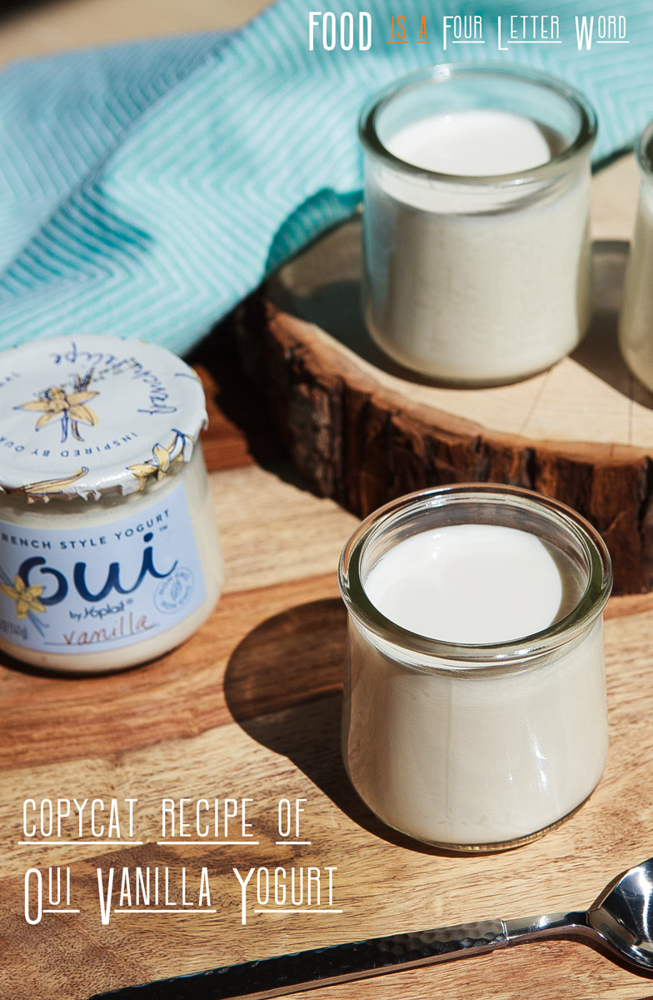

Oui Vanilla Yogurt Recipe

Description
This copycat oui vanilla yogurt mimics the well known
oui yogurt by Yoplait. It only requires a few ingredients, and is low-cost.
You can save hundreds of dollars a year by making your own yogurt!
This recipe is NOT an original recipe and is simply repeating information from this website.
Ingredients
- 4 3/4 cups Whole milk
- 3/4 teaspoon Vanilla extract
- 1/3 Granulated sugar
- 2 teaspoons oui vanilla yogurt
Instructions
Note: again, this is not an original recipe. The original recipe is at this website.
- Pour 4¾ Cups Whole Milk & ⅓ Cup Granulated Sugar into a saucepan,
heat on low until it hits 190°F and hold it around that temperature for 10 minutes.
Turn off the heat and let the milk cool to 110°F.
- Place 2 Teaspoons Oui Yogurt into a bowl and add 2 Tablespoons of the cooled milk -
mix very well with a whisk, making sure there are no yogurt lumps - this ensures that
you'll end up with smooth yogurt. Pour the yogurt starter and ¾ Teaspoon Vanilla Extract
into the saucepan with the milk and stir well. Avoid scraping the bottom of the pan,
there's usually milk solids stuck to the bottom that can give your yogurt a gritty texture.
- Ladle the mixture into your jars. Seal the jars with lids or cover each jar with homemade foil lids.
Place the jars directly in into the Instant Pot.
- Press the Yogurt button and make sure it's on the “Normal” setting, set the Instant Pot for 9 hours.
After it's done, give it a taste—if you prefer it more tart, you can incubate the yogurt for a
few more hours.
- Refrigerate the jars for at least 6 hours before serving. Enjoy without stirring.